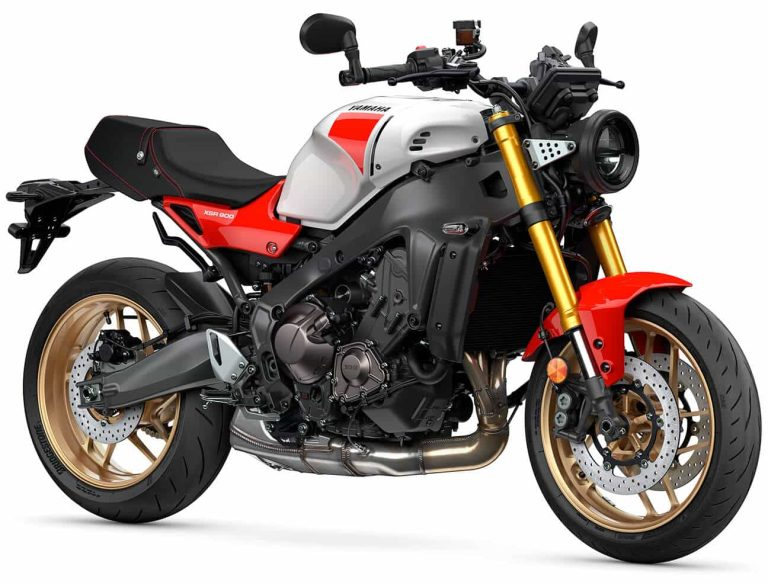

Peso188 kg
Cilindraje689 cc
Altura1160 mm
Largo2070 mm
COLORES DISPONIBLES
Selecciona un color para ver la R7

$ 55.000.000Precio de referencia. Sujeto a cambios sin previo aviso.
FICHA TÉCNICA
Especificaciones de la R7
Largo total2070 mm
Ancho total705 mm
Altura total1160 mm
Altura al asiento835 mm
Peso (con aceite y tanque de gasolina lleno)188 kg
Tipo de motor4 tiempos, DOHC, 4 válvulas, refrigerado por líquido
Disposición de los cilindros2 cilindros en línea (CP2)
Cilindraje689 cc
Potencia máxima72.4 HP a 8750 rpm
Torque máximo67 Nm a 6500 rpm
ArranqueEléctrico
Sistema de alimentaciónInyección de combustible
Capacidad de combustible13 L
Tipo de transmisión6 velocidades
Freno delanteroDoble disco (ABS)
Freno traseroDisco (ABS)
Tipo de suspensión delanteraHorquilla invertida KYB 41 mm
Luz principalLED
ABSSí
Inyección electrónica (FI)Sí
* Las especificaciones pueden variar según el modelo y el año. Consulta con tu asesor de Yamaha San José Del Guaviare.
¿LISTO PARA ESTRENAR TU R7?
Simula tu crédito en minutos o escríbenos por WhatsApp y te asesoramos.